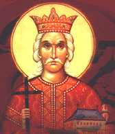
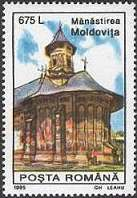
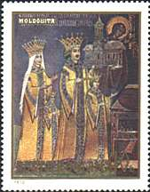
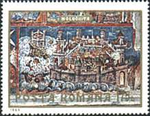
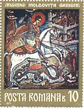
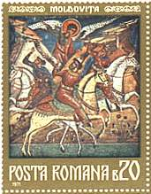
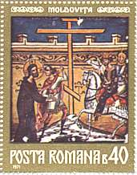
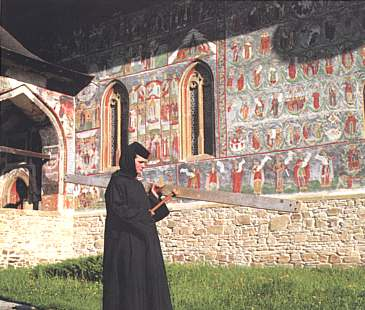
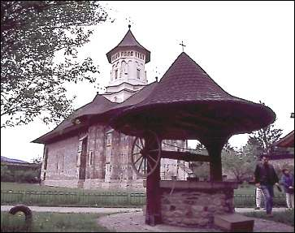

|
 |
From the Moldovita Monastery |

The first monastery erected on the site was the one built by Alexander the Kind-Hearted (Alexandru cel Bun, 1400-1432), between 1402 and 1410, but it collapsed at the beginning of the 16th century because of the very heavy rains and ground sliding; its ruins can still be seen today.
Moldovita Monastery that one can we see today dates back to 1532 and is due to ruling prince Petru Rares (1532-1546)*. It has, like Sucevita, the aspect of a fortress, with imposing towers and high, thick walls (6 m high, 1.2 m wide). According to the architectural tradition set by Stephen the Great (Stefan cel Mare), the church has a three-cusped plan, as well as an open porch. The masters who painted its interior and exterior walls have decorated them with scenes from 16th century Moldavian daily life.|
 |
 |
But the most interesting
painting is the Siege of Constantinople on the south façade, relating to
the Romanians' fights against foreign invasions, especially Turks. The painting
combines scenes of the siege of Constantinople from 1453 with others referring
to a previous such attempt made by the Persians, in 626. The frescoes are due to
Toma of Suceava and were painted in 1537, when Petru Rares had not
yet given up his fight against the Sultan.
Against an intense blue background, you can also see the Hymn
to the Virgin composed by Metropolitan Sergius in thanksgiving for
her intervention, while further along is a lovely Tree of Jesse, with
dozens of figures entwined in a foliage. The Last Judgement is also
present, and displays apocalyptic images of dignitaries being taken along by
Satan to Hell.
|
 |
 |
 |
Another valuable fresco is that of
the Customs of Heaven, also present at Humor, Arbore and Voronet
monasteries, which is inspired by folk legends. In the ‘customs’ of heaven,
the souls are judged as soon as they have died and go over several barriers
before they enter Paradise with the angels' help, after having paid their
tribute to devil publicans. This is the origin of an old Romanian tradition of
throwing coins into a dead person’s coffin or into the recently dug grave, or
throwing coins into the rivers that are crossed over by a burial procession on
their way to the graveyard.
On the right side of the nave, there is a mural painting of Petru Rares and
his family, presenting the monastery to Jesus.
|
 |
 |
Moldovita’s frescoes along with the ones at Voronet, have best preserved their colours which are astonishingly fresh and vivid. The two-story "clisarnita" with a circular tower houses a rich museum with 17th and 18th century books, as well as other monastic treasures, including a silver-chased Evangelistry presented by Catherine the Great, empress of Russia. The latter piece has not only a highly artistic and religious value, but also an intrinsic one, as each and every page of this book was made from the skin of an unborn lamb, killed together with his mother.
Background: Voronet Monastery, outer wall painting.
Links to other Monastery Frescoes pages: Introduction, Voronet, Sucevita
| Published:
07/01/01. Revised:
01/02/06.
Copyright © 1999 - 2001 - 2006 by Victor Manta, Switzerland. All rights reserved in all countries. |